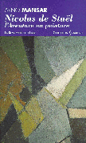

Nicolas de Staël catalogue raisonne de l'œuvre peint
Auteur : François de Staël
Éditeur : Ides et Calendes
Album / 1280 pages / format 24 x 30 / illustrations / relié couverture illustrée
Dans cet ouvrage, vous trouverez l'intégralité de l'œuvre peint de Nicolas de Staël dans un ouvrage très richement illustré, réalisé par Françoise de Staël
La mesure de Nicolas de Staël
Auteur : Jean-Pierre Jouffroy
Éditeur : Ides et Calendes
Album / 240 pages / format 25 x 32 / 127 illustrations / relié couverture illustrée
Le prince foudroye, la vie de Nicolas de Staël
Auteur : Laurent Greilsamer
Éditeur : Fayard
Document / 335 pages / format 18 x 23 / illustrations / broché couverture illustrée
Nicolas de Staël, l'aventure en peinture
Auteur : Arno Mansar
Éditeur : La renaissance du Livre
Document / 236 pages / format 18 x 24 / illustrations / broché couverture illustrée
Nicolas de Staël
Auteur : Jean Louis Prat
Éditeur : Fondation Pierre Gianada
Catalogue / 232 pages / format 22 x 24 / illustrations / relié couverture illustrée